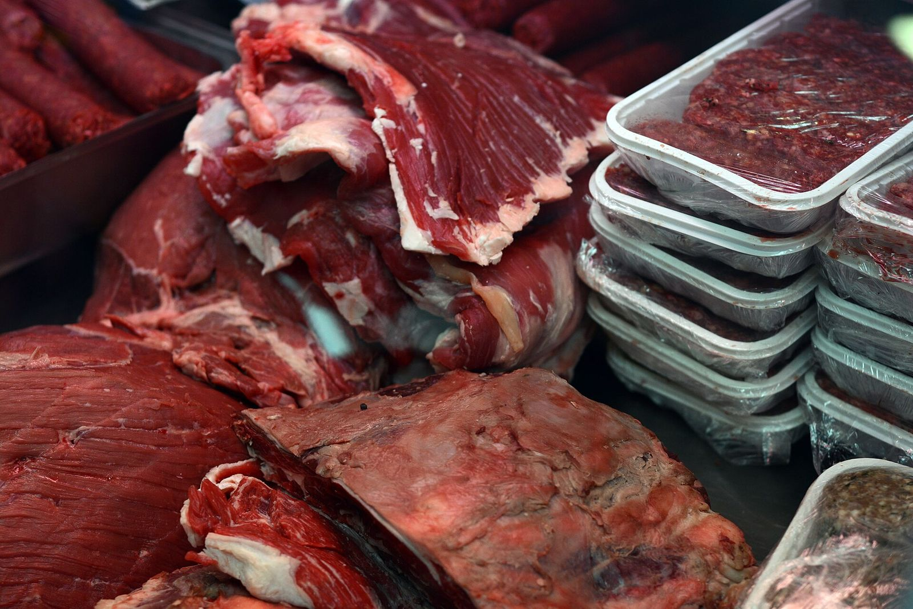
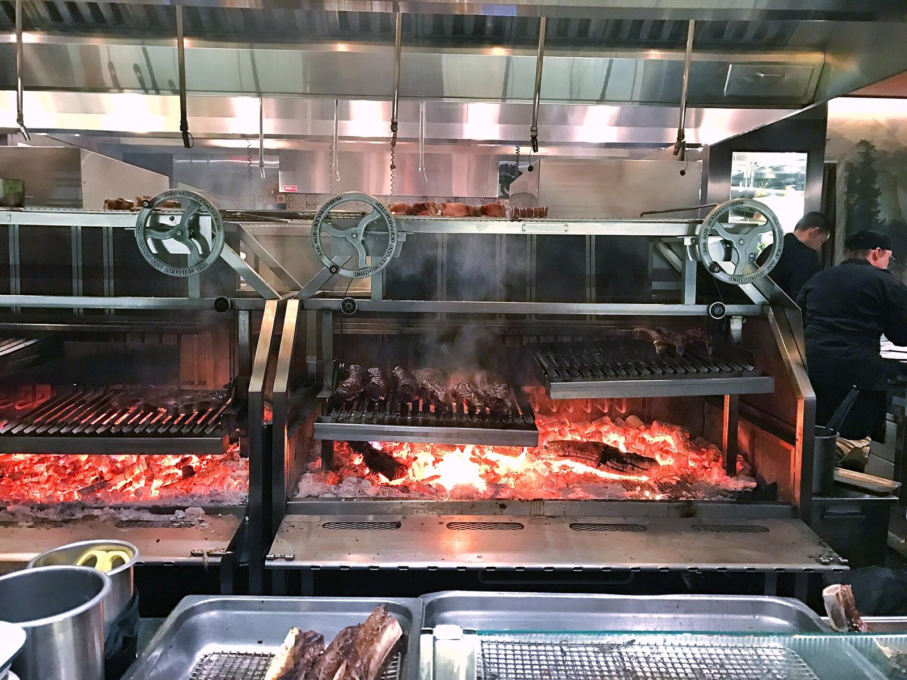
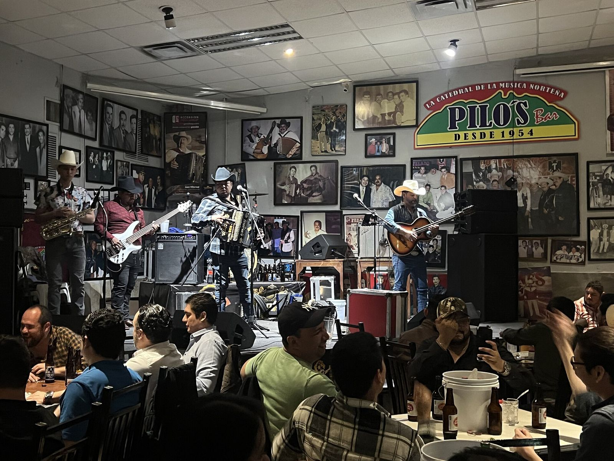
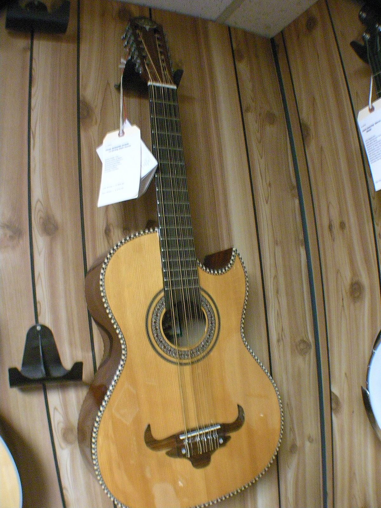
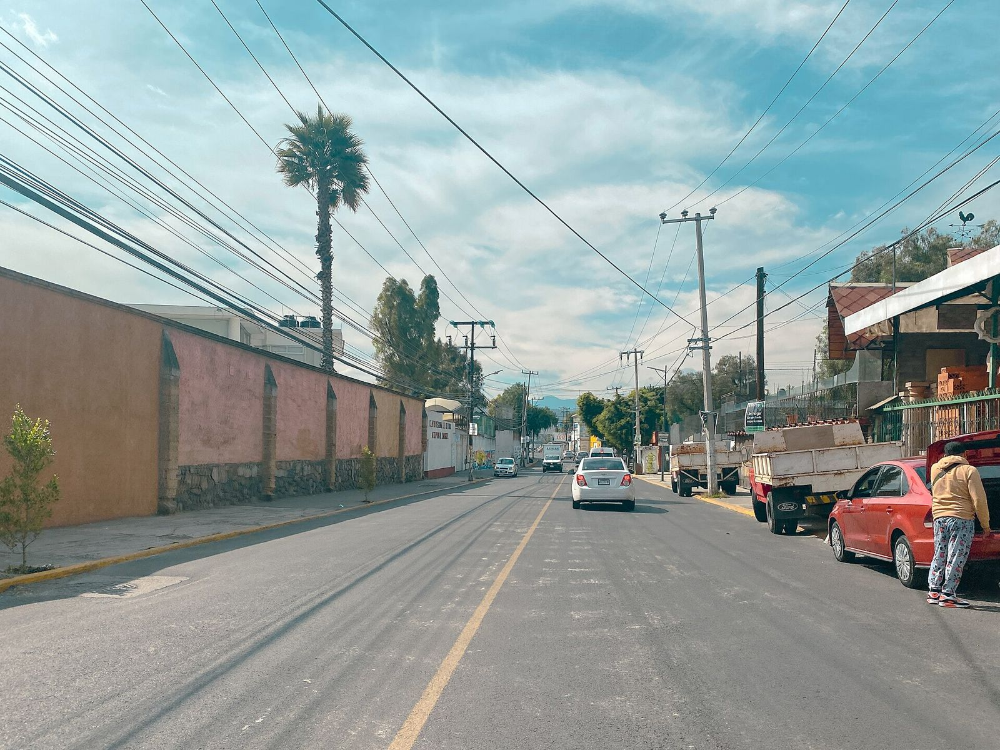

Carnes delNorte Selecto
Carnicería, asador y terraza en Ciudad López Mateos. Cortes norteños para llevar a tu asador o para comer aquí, al carbón.
Tres sucursales en Atizapán de Zaragoza. La carnicería abre a las 7 a.m.
La vitrina
10 cortes de resCada corte con su lugar en el animal y el punto de partida para cocinarlo.

Para el asador
6 cortes- {{MINI arrachera}}Arrachera4 min por lado
Del diafragma, de grano largo y marcado. Se rebana contra la fibra al servirla.
- {{MINI ribeye}}Rib eye5 min por lado
Del lomo alto, con el ojo de grasa al centro que se derrite sobre la brasa.
- {{MINI newyork}}New York5 min por lado
Del lomo bajo, con su orilla de grasa; conviene dejarla puesta mientras se asa.
- {{MINI newyork}}T-bone6 min por lado
El hueso en T separa dos cortes en uno: de un lado New York, del otro filete.
- {{MINI picana}}PicañaGrasa primero
La tapa de la cadera, con su capa de grasa. Se asa primero del lado de la grasa.
- {{MINI costilla}}Costilla cargada3 min por lado
Carne entre hueso y hueso, en corte delgado para que se dore rápido.
Para la semana
4 cortes- {{MINI diezmillo}}DiezmilloPara guisar
Del cuello y la espalda alta. Para bistec en salsa, guisos y carne con chile.
- {{MINI bola}}Bistec de bolaPlancha, 2 min
De la pierna, magro y parejo. En bistec delgado o para milanesa.
- {{MINI chamberete}}ChambereteCaldo, 2 h
De la parte alta de la pata, con hueso y tuétano. El corte del caldo de res.
- {{MINI pecho}}PechoOlla, 3 h
Fibra larga que se deshace con tiempo. Para deshebrar, salpicón y tacos.
Arma tu carne asada
Cuenta 350 gramos de carne cruda por adulto y la mitad por niño. Si son de buen diente, 450.
Tu lista para el mostrador
- Arrachera
- 1.60 kg
- Rib eye
- 1.60 kg
- Tortillas de harina
- 46
- Cebollitas
- 15
- Carbón
- 5 kg
- Carne en total
- 3.20 kg
La terraza
Lo que sale de la vitrina se asa al carbón y se come en la terraza, bajo el árbol de flores rosas.
El restaurante y la terraza abren a las 8 a.m. Desayuno, comida y sobremesa con la carne de la misma vitrina.
Cómo llegar
Noches con música en vivo
“Hay noches para olvidar… y otras para cantar lo que dolió.”
La más reciente fue el viernes 30 de octubre con el Dueto Rodríguez, a las 7 p.m. y con cupo limitado. Las próximas fechas salen primero en sus redes.


Lo que dicen en Google
Calificación y número de opiniones de cada sucursal en Google Maps, noviembre de 2026.
- 4.7de 5Restaurante y terraza290 opiniones
- 4.5de 5Carnicería61 opiniones
- 3.9de 5Sucursal Ruiz Cortines74 opiniones
Excelente lugar para comer
Reseña en GoogleRestaurante y terrazaExcelente carnicería
Reseña en GoogleCarniceríaExcelente calidad de la carne
Reseña en GoogleSucursal Ruiz Cortines
Sucursales y horarios
Ciudad López Mateos
Restaurante y terraza
Abre 8 a.m.Para comer, con la carne de la vitrina y las noches de música.
Ver en MapsCarnicería
Abre 7 a.m.Mostrador de cortes para llevar, la primera en abrir.
Ver en MapsSucursal Ruiz Cortines
Abre 8 a.m.Carnicería sobre la avenida Ruiz Cortines.
Ver en Maps
Cuándo ir sin fila
Los lunes en Ruiz Cortines la hora más llena es a las 2 p.m. Antes de las 11 casi no hay espera.
Horarios populares de Google Maps para un lunes, de 8 a.m. a 5 p.m.
Aparta tu mesa
Las noches de música tienen cupo limitado. Llena el cupón y se lo mandas a la sucursal por mensaje de Instagram.